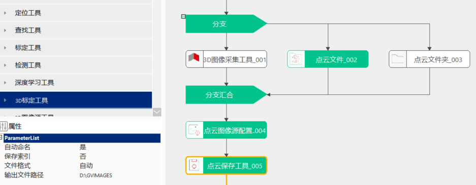

Công cụ lưu đám mây điểm chủ yếu dùng để lưu ảnh ở định dạng đám mây điểm.
Trong các dự án đo lường và kiểm tra 3D, thường cần lưu lại ảnh đám mây điểm（index）đã thu thập để phục vụ nhu cầu đo kiểm lại sau này, do đó cần xử lý vấn đề lưu đám mây điểm.

Không có
| Tên tham số | Mô tả tham số |
|---|---|
| Dữ liệu đám mây điểm đầu vào | Ảnh đám mây điểm dùng để lưu |
| Tên file | Khi “Tự động đặt tên” trong cửa sổ thuộc tính được chọn là “Không”, liên kết này sẽ xuất hiện. Tại đây liên kết tên đã chuẩn bị trước, có thể là tên file riêng（như cloud）hoặc tên file có đường dẫn thư mục（như 20230302\\cloud） |
| Index đầu vào | Nhập số index đám mây điểm cần lưu |
| Tên tham số | Mô tả tham số |
|---|---|
| Tự động đặt tên | Không：cần liên kết “Tên file” trong liên kết dữ liệu, Có：hệ thống tự định nghĩa tên, quy tắc đặt tên của hệ thống：tên công cụ+thời gian+ID 8 ký tự, ví dụ 点云保存工具_005_20230302104136644_f2eab9c4.ply |
| Lưu index | Có：cần liên kết “Index đầu vào” trong liên kết dữ liệu, tên file giống với tên file lưu đám mây điểm, hậu tố là index, lưu index lại；Không：không lưu index |
| Định dạng file | Chọn định dạng lưu của ảnh đám mây điểm. Chia thành ba loại: tự động, PLY, TXT |
| Đường dẫn file đầu ra | Địa chỉ lưu ảnh đám mây điểm |
| Tên tham số | Mô tả tham số |
|---|---|
| Kết quả thực thi | Kết quả thực thi công cụ |
| Thời gian thực thi | Thời gian thực thi công cụ |
Tham khảo “\Samples\3D\点云\点云图像源配置工具.gvp”。